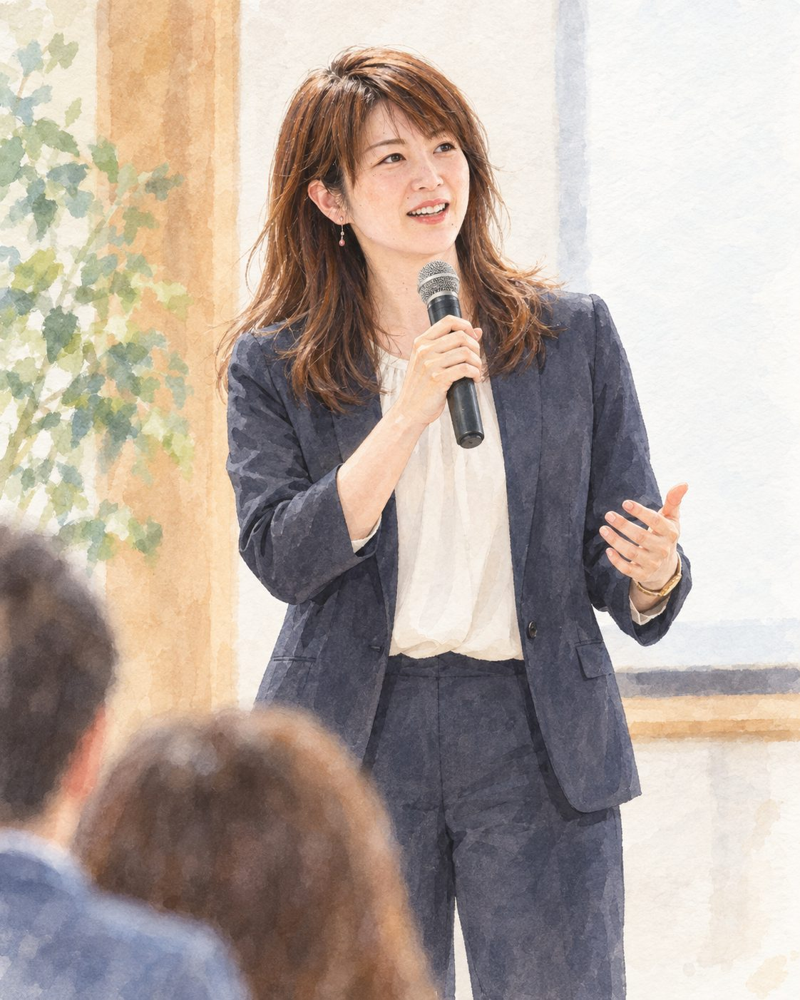
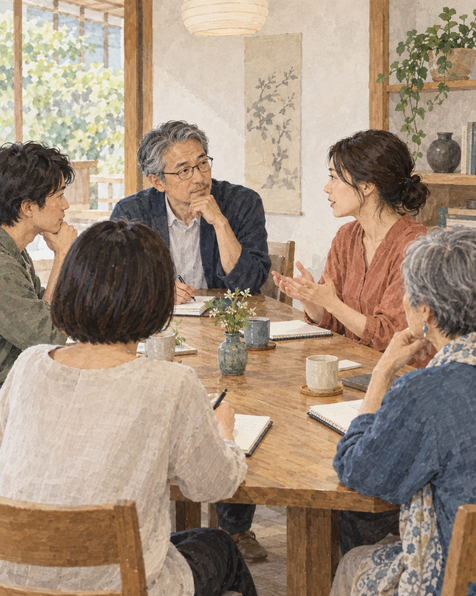
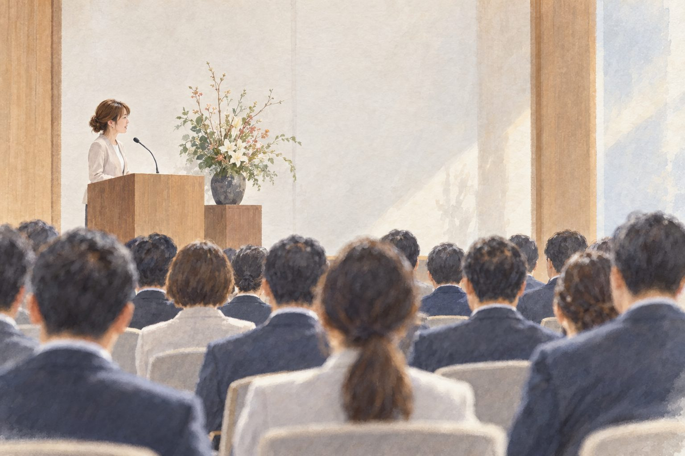
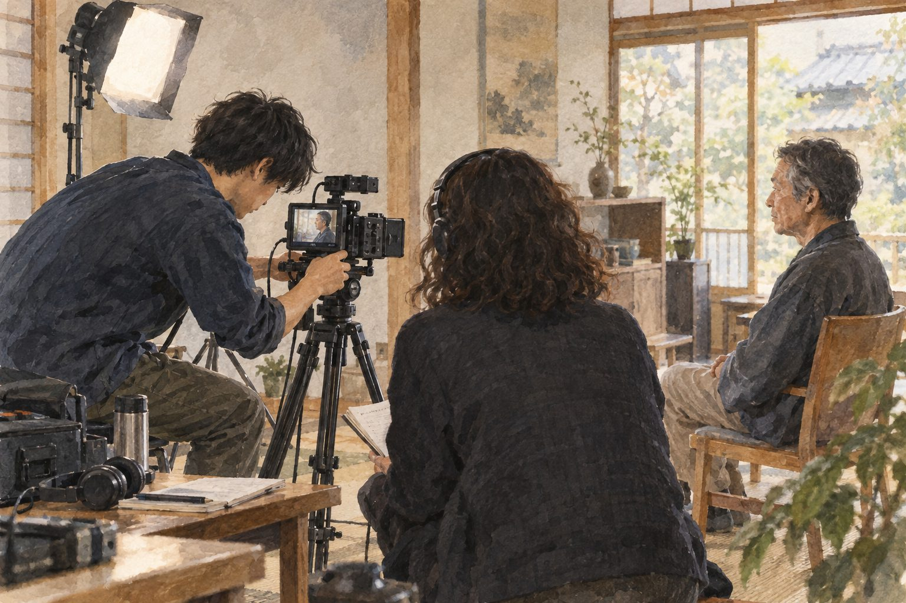
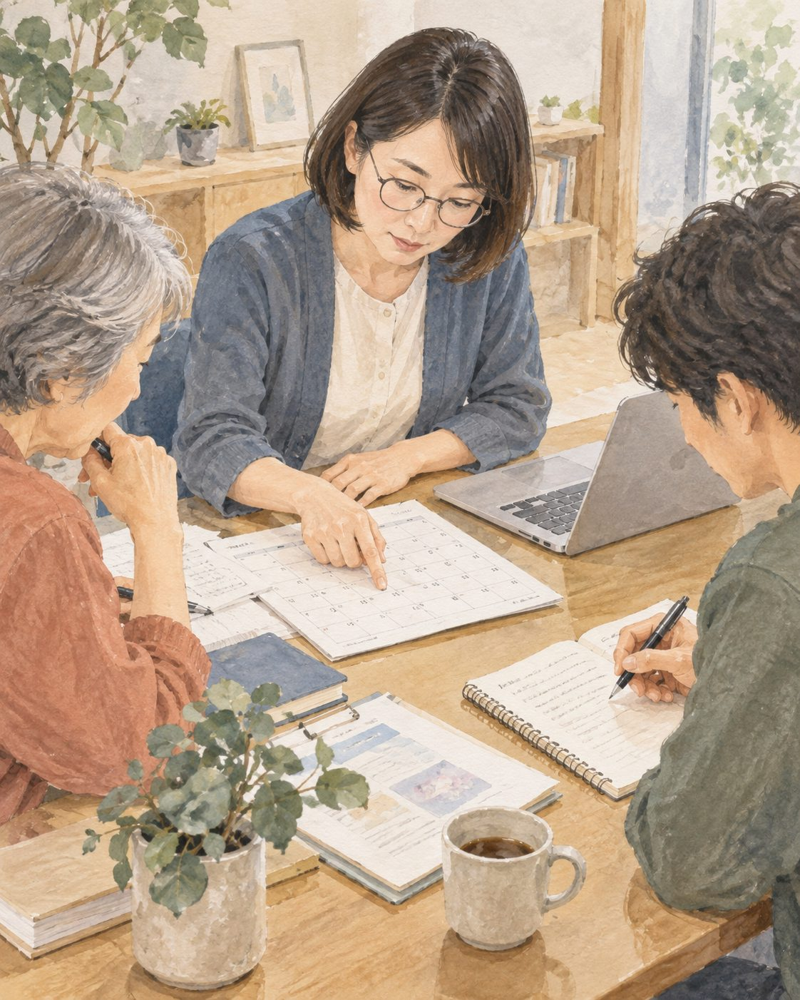
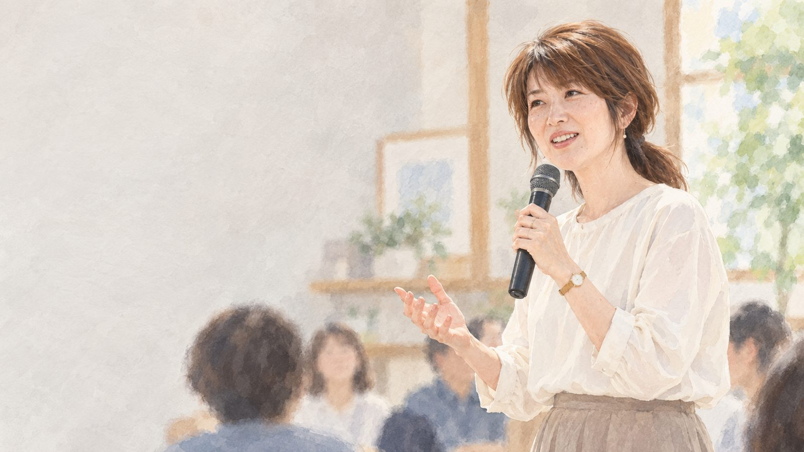
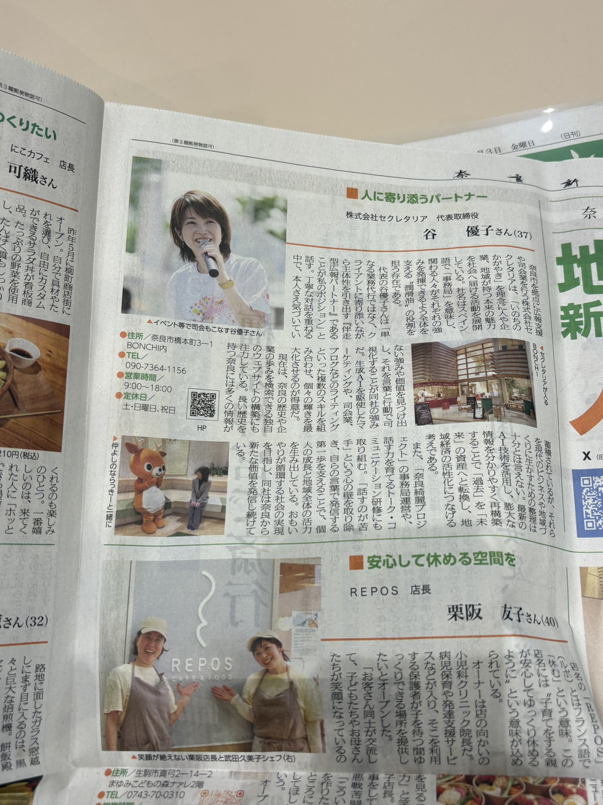
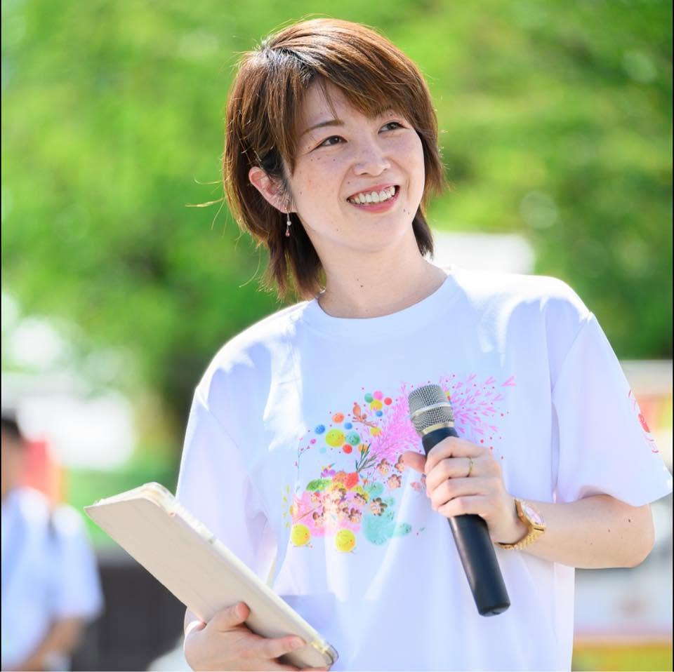

セクレタリアは、人や企業がすでに持っている価値を見つけ、 広報・SNS・映像・研修・司会・事務局運営を通じて、 「伝わる形」にし、社会へつなぐ会社です。

メインビジュアルよい商品や活動、積み重ねてきた経験があっても、その価値が相手に届かなければ、次の出会いは生まれません。 セクレタリアは、まだ言葉になっていない魅力を見つけ、伝え方と動かし方を、となりで一緒につくります。

打ち合わせ・対話対話を重ね、人や企業がすでに持っている魅力・経験・強みを掘り起こします。
言葉、写真、映像、場づくり。その価値に合う方法を選び、相手に届く表現へ整えます。
発信や運営を続けられる形に整え、人・企業・地域のあいだに新しい接点をつくります。

現場写真その場に立ち、言葉を届ける。

映像制作
事務局・運営関係者との調整や情報整理など、活動が滞りなく進むための実務と対話を支えます。
実績奈良綺麗プロジェクト

研修経営者の想いや組織の価値を、社員一人ひとりが自分の言葉で語れる状態を目指します。
実績一般社団法人りょうしん塾「心のスポンジづくり」初級指導者認定
企業イベントや式典の目的と想いをくみ取り、会場と登壇者をつなぐ進行を行います。
私たちが大切にしているのは、一方的に答えを渡すことではありません。 対話のなかでお互いの知恵や経験を持ち寄り、その人・その会社の力が生きる伝え方とつながりを、一緒に見つけていきます。

奈良新聞
令和8年4月3日（2026年4月3日）掲載
奈良西警察署 × 奈良信用金庫
官民連携の特殊詐欺被害防止の取り組みとして、啓発動画の企画・制作をサポートしました。奈良県警察公式チャンネルと、奈良信用金庫「ならっきーチャンネル」の両方で公開されています。
SOCIAL MEDIA
制作・運用をサポートしているフレック九条様の公式Instagramです。下のカードから最新の投稿をご覧いただけます。
フレック九条 ＠fleckkujime 投稿を見る →広報支援・研修
司会・MCの実績はサービス「司会・MC」をご覧ください。

代表取締役
Yuko Tani
もともと、話すことが得意ではありませんでした。親戚の集まりでも隅に隠れているような子どもで、学校やアルバイトで表面上は話せても、苦手意識は抜けないまま。大学生のころに心を病み、一時は学校へ通えなくなりました。仮面浪人で環境を変え、少しずつ回復するなかで、「それでも、うまく伝えられるようになりたい」という一心から、“話す仕事”を志して学び始めました。
会社員として働きながら、土日はキャラクターショーのMCや司会に立つ日々。その現場で、話すこと・伝えることの本質を学びました。今は言葉だけでなく、文章・映像・SNSといった“伝わる媒体”をつくり、話し方の研修を通して、その人らしさを残したまま円滑に伝わるコミュニケーションを支えています。
CAREER
| 会社名 | 株式会社セクレタリア（Secretaria Inc.） |
|---|---|
| 設立 | 令和7年10月10日 |
| 代表取締役 | 谷 優子 |
| 事業内容 | 広報・SNS支援 / 映像・コンテンツ制作 / 事務局・プロジェクト運営 / 研修・組織づくり / 司会・MC |
| 所在地 | 〒630-8217 奈良市橋本町3-1 BONCHI内 |
| URL | https://www.mc-secretaria.com |
| 公告方法 | 電子公告 |
広報・SNS・映像・事務局運営・研修・司会に関するご相談はこちらから。
返信は通常1〜3営業日以内を目安にしております。